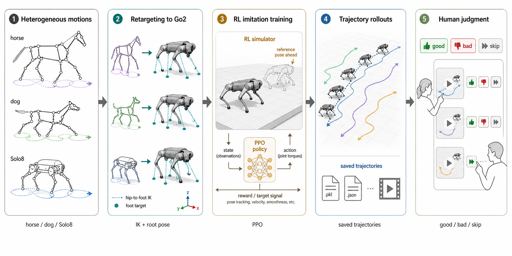

Kine2Go
Kinematic dataset for the Unitree Go2 robot with diverse gaits and motions.
Abstract
The recent popularity of robotics, combined with the steadily decreasing cost of robotic hardware, has lowered the entry barrier to robotics research and enabled rapid advancements in the field. One of the primary examples is the Unitree Go2 quadruped robot, which is often used by researchers in the areas of locomotion, navigation, control, and others. Many researchers use the Go2 robot in combination with techniques like imitation learning, reinforcement learning, and behavioral cloning to allow machine learning systems to take full control of the robot. At the same time, many of those techniques require demonstration data consisting of the robot's kinematics information and actions applied to the motors. Obtaining such data is difficult, requires building complex pipelines, and can take significant time. To aid in those kinds of efforts, we present \texttt{Kine2Go} - a dataset with 800 diverse gait kinematics trajectory motion data for the Unitree Go2 robot, derived from 40 distinct policies. Our pipeline accepts data from various quadruped morphologies and translates them to a Go2-compatible format. Then we use Reinforcement Learning to train policies following a given motion, and finally we gather data from those policies, which grants robust, perturbed kinematic data with corresponding motor-level actions.

Dataset
A kinematic motion dataset for the Unitree Go2 quadruped robot. Forty reference clips (dog, horse, and synthetic robot motions) are retargeted to the Go2 morphology and paired with a per-clip imitation-learning policy (PPO) and 20 perturbed rollouts with rendered video. Designed to support training and regularization of behavioral foundation models for legged locomotion (Meta Motivo style), with secondary applicability to single-clip behavioral cloning and motion-retargeting evaluation.
Pipeline
To easily gather the dataset of motions, we have created a pipeline consisting of 3 main stages:
-
Kinematic Retargeting
We map MoCap data from different source morphologies onto the kinematic structure and degrees of freedom (DoF) of the Unitree Go2 robot, preserving the source motion while aligning it to the target robot. -
Reinforcement Learning Motion Imitation
Each retargeted motion becomes a reference trajectory for RL-based imitation. We train a separate control policy to track each reference and produce robust, physically feasible behavior. -
Trajectory gathering and filtering
The trained policies generate stochastic simulator rollouts containing proprioceptive states and motor commands. We filter out unstable trajectories with collisions, falls, or large deviations from the reference motion.
Example Videos of motions
Trot motion rollout.
Canter motion rollout.
Jump motion rollout.
BibTeX
@misc{pałucki2026kine2gokinematicdatasetunitree,
title={Kine2Go: Kinematic dataset for the Unitree Go2 robot with diverse gaits and motions},
author={Władysław Pałucki and Paweł Siwak and Krzysztof Ciebiera and Marek Cygan},
year={2026},
eprint={2606.14433},
archivePrefix={arXiv},
primaryClass={cs.RO},
url={https://arxiv.org/abs/2606.14433},
}